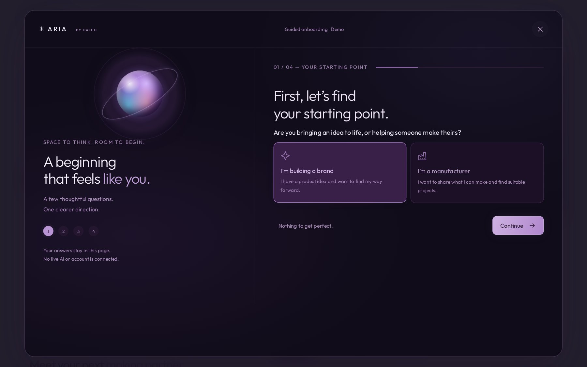
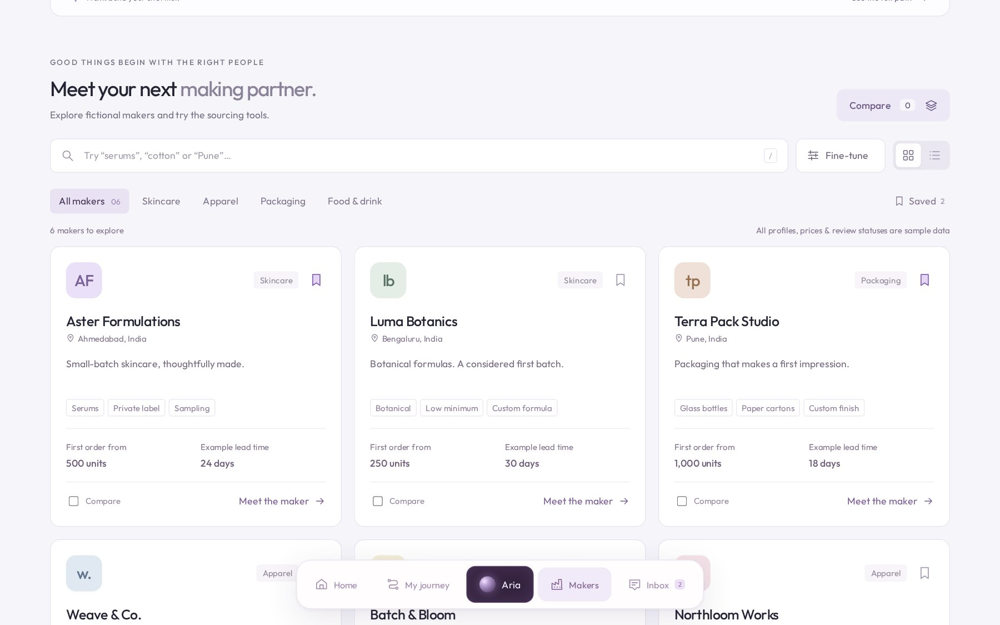
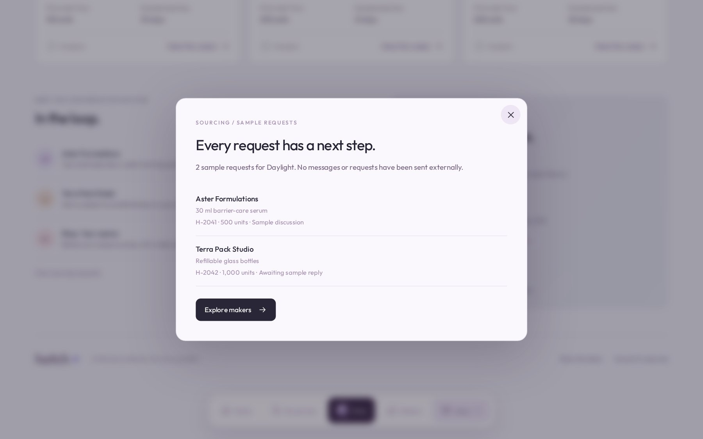
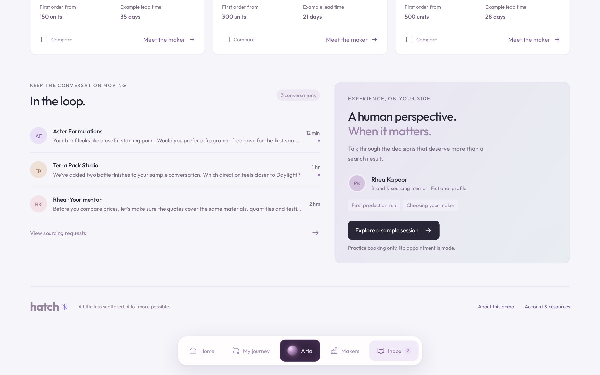
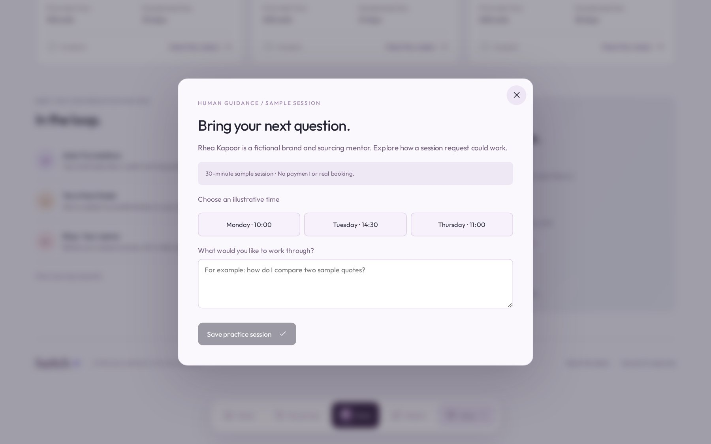
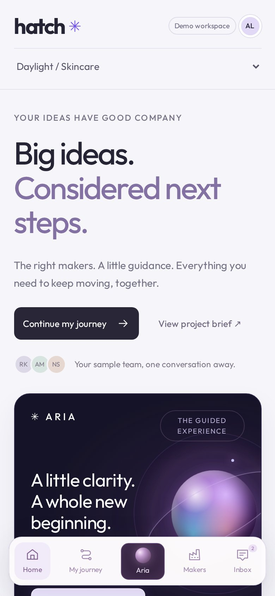

06 / Full case study
Hatch
make your next move.
A workspace for people launching their first product: shape the idea, find the right makers, keep the conversations moving and get a human view when it matters.

The problem
How do you make a first product launch feel a little less scattered?
Someone with a product idea has to juggle a brief, a shortlist of makers, sample requests, quotes and advice, usually across scattered chats and spreadsheets. Hatch pulls that into one workspace around a single project, here a first skincare collection called Daylight.
The main screen shows where the project stands on a five-step path, from the idea and the brief to finding makers, trying samples and making it real, and points to the next step: build your shortlist.
The sequence
From an idea
to the right makers.

Aria is a four-step guided onboarding flow. It starts by asking whether you are building a brand or are a manufacturer. In this demo the answers stay in the page.

A directory of fictional makers with search, category filters, saved makers and a compare option. Each card shows the first order size and an example lead time.

Every sample request in one list, with the maker, the product, the quantity and where it stands.

Recent messages from makers and a mentor sit next to an invitation to talk a decision through with a person.

A sample session request: pick an illustrative time and write what you want to work through. No booking or payment is made.

The same workspace stacks into one column, with the dock at the bottom for quick moves.
A necessary boundary
A demo you can safely
play with.
Hatch is a concept demo, not a live service. The makers, prices, review statuses and the mentor are fictional sample data, nothing is sent to anyone, and no live AI or account is connected. There are no results or user feedback to report yet.